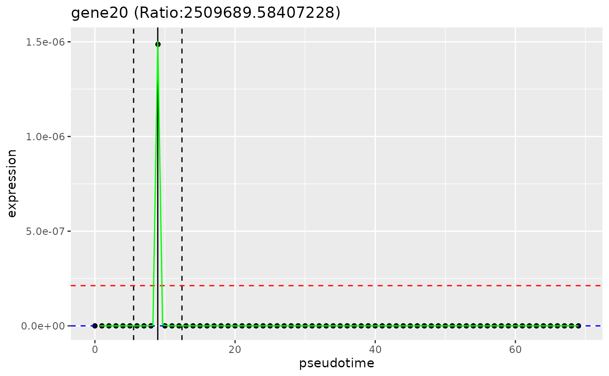

plot_gene_peakedness
plot_gene_peakedness.Rdplot_gene_peakedness
Value
A ggplot2 plot showing: in black points, expression of the gene over pseudotime, in a green line, the fitted expression of the gene over pseudotime, the inside and outside of window means of smoothed expression (red and blue dotted horizotal lines respectively), and the bounds of the window (in black dotted vertical lines).
Examples
ncells <- 70
ngenes <- 100
counts_matrix <- matrix(
c(seq_len(3500) / 10, seq_len(3500) / 5),
ncol = ncells,
nrow = ngenes
)
sce <- SingleCellExperiment::SingleCellExperiment(assays = list(
counts = counts_matrix * 3,
normcounts = counts_matrix,
logcounts = log(counts_matrix)
))
colnames(sce) <- paste0("cell", seq_len(ncells))
rownames(sce) <- paste0("gene", seq_len(ngenes))
sce$cell_type <- c(
rep("celltype_1", ncells / 2),
rep("celltype_2", ncells / 2)
)
sce$pseudotime <- seq_len(ncells)
genelist <- rownames(sce)
# calculate_gene_peakedness
gene_peakedness <- calculate_gene_peakedness(
sce, pseudotime_slot="pseudotime")
head(gene_peakedness)
#> gene peak_pseudotime mean_in_window mean_out_window ratio window_start
#> 100 gene1 70 650.2 231.2076 2.812192 66.5
#> 1001 gene2 70 650.4 231.3545 2.811270 66.5
#> 1002 gene3 70 650.6 231.5015 2.810349 66.5
#> 1003 gene4 70 650.8 231.6485 2.809429 66.5
#> 1004 gene5 70 651.0 231.7955 2.808511 66.5
#> 1005 gene6 70 651.2 231.9424 2.807593 66.5
#> window_end deviance_explained
#> 100 73.5 0.9608241
#> 1001 73.5 0.9608646
#> 1002 73.5 0.9609050
#> 1003 73.5 0.9609454
#> 1004 73.5 0.9609857
#> 1005 73.5 0.9610260
# plot_gene_peakedness
plot_gene_peakedness(sce, gene_peakedness, "gene20",
pseudotime_slot = "pseudotime")

# smooth_gene
smoothed_gene20 <- smooth_gene(
sce, "gene20", pseudotime_slot = "pseudotime")
head(smoothed_gene20)
#> 1 2 3 4 5 6
#> 18.65217 21.10711 23.88086 27.00601 30.51590 34.44399